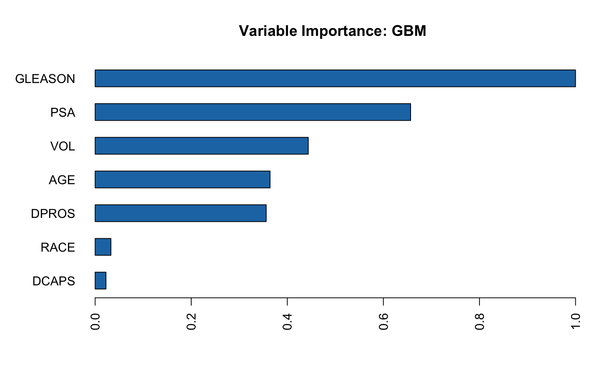
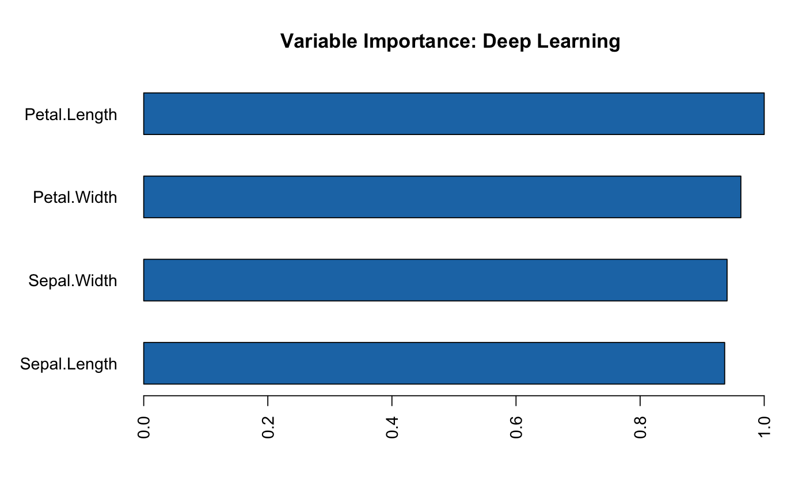

Plot Variable Importances
h2o.varimp_plot(model, num_of_features = NULL)
| model | A trained model (accepts a trained random forest, GBM,
or deep learning model, will use |
|---|---|
| num_of_features | The number of features shown in the plot (default is 10 or all if less than 10). |
h2o.std_coef_plot for GLM.
#> Reading in config file: ./../../../../.h2oconfig #> Connection successful! #> #> R is connected to the H2O cluster: #> H2O cluster uptime: 3 days 4 hours #> H2O cluster timezone: #> H2O data parsing timezone: #> H2O cluster version: 3.17.0.99999 #> H2O cluster version age: 3 days #> H2O cluster name: terrytangyuan #> H2O cluster total nodes: 1 #> H2O cluster total memory: 17.59 GB #> H2O cluster total cores: 8 #> H2O cluster allowed cores: 8 #> H2O cluster healthy: TRUE #> H2O Connection ip: localhost #> H2O Connection port: 54321 #> H2O Connection proxy: NA #> H2O Internal Security: FALSE #> H2O API Extensions: XGBoost, Algos, AutoML, Core V3, Core V4 #> R Version: R version 3.4.2 (2017-09-28) #>#> | | | 0% | |======================================================================| 100%hex[,2] <- as.factor(hex[,2]) model <- h2o.gbm(x = 3:9, y = 2, training_frame = hex, distribution = "bernoulli")#> | | | 0% | |================================== | 48% | |======================================================================| 100%h2o.varimp_plot(model)#> | | | 0% | |======================================================================| 100%#> | | | 0% | |===================== | 30% | |======================================================================| 100%h2o.varimp_plot(iris.dl)